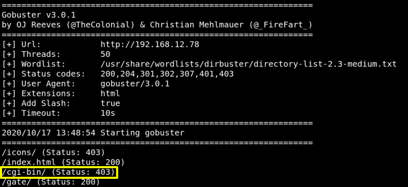

$gobusterdir -f -t 50 -x html -u http://192.168.12.78 -w /usr/share/wordlists/dirbuster/directory-list-2.3-medium.txt
Output: 
The original scan had an HTTP 403 response code for “/cgi-bin/”, which is uncommon but is a great indicator that there may be some type of CGI application running on the machine.
d) Run “gobuster” again with that path.
$gobusterdir -f -t 50 -x html -u http://192.168.12.78/cgi-bin/ -w /usr/share/wordlists/dirbuster/directory-list-2.3-medium.txt